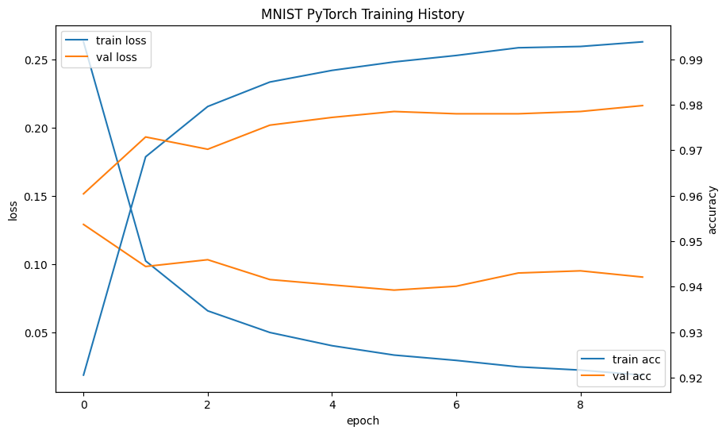
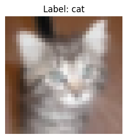

CH 01 다차원배열을 텐서로 — shape가 데이터의 형태다 #
먼저 텐서의 기본 감각부터 잡았다. 행렬·행벡터·열벡터를 torch.tensor로 만들고
shape를 찍어보는 단순한 연습인데, 여기서 익힌 "차원을 읽는 습관"이 뒤의 이미지 데이터에서 그대로 쓰인다.
학습 · 같은 데이터라도 shape에 따라 의미가 달라진다
2×3 행렬, 1×5 행벡터, 4×1 열벡터를 각각 만들어 shape를 비교했다. 숫자의 개수가 같아도 배치된 차원이 다르면 연산 규칙이 달라진다는 걸 손으로 확인하는 단계다.
A (2x3 행렬) =
tensor([[ 1., -3., 0.],
[ 7., 5., 9.]])
shape: (2, 3)
row_vector (1x5 행벡터) =
tensor([[ 1., 3., -9., 0., 4.]])
shape: (1, 5)
column_vector (4x1 열벡터) =
shape: (4, 1)
S의 대각성분 =
tensor([1., 5., 8.])
shape: (3,)
시행 · 신경망 한 층 = 행렬 곱 + 편향
입력 4×3, 가중치 3×2, 편향 길이 2로 Y = XW + b를 직접 계산했다. 결과는 4×2.
"선형 계층 하나가 곧 행렬 곱"이라는 걸 shape 변화로 읽을 수 있다 — 입력 특성 3개가 출력 특성 2개로 바뀐다.
X: 입력 데이터 shape: (4, 3)
W: 가중치 행렬 shape: (3, 2)
b: 편향 벡터 shape: (2,)
Y = XW + b =
tensor([[0.6000, 0.7000],
[1.2000, 2.2000],
[1.8000, 3.7000],
[0.7000, 1.9000]])
shape: (4, 2)
CH 02 이미지를 텐서로 — ToTensor와 0~1 스케일링 #
학습 · 픽셀 0~255를 그대로 넣으면 안 되나?
MNIST 픽셀 값은 0~255 정수다. 이대로 신경망에 넣으면 입력 크기가 들쭉날쭉해 학습이 한쪽으로 치우친다.
그래서 transforms.ToTensor()를 쓴다. 이 한 줄이 PIL 이미지를 텐서로 바꾸면서
값을 0~1 범위의 float로 동시에 스케일링한다.
transform = transforms.Compose([
transforms.ToTensor() # PIL/ndarray → Tensor, 0~255 → 0~1 float
])
full_train_dataset = datasets.MNIST(
root='./data', train=True, download=True, transform=transform)
test_dataset = datasets.MNIST(
root='./data', train=False, download=True, transform=transform)
관찰 · 흑백은 채널 1, MNIST 한 장은 (1, 28, 28)
ToTensor를 거친 MNIST 샘플은 채널 차원이 붙어 (1, 28, 28)이 된다. 흑백이라 채널이 1.
화면에 띄울 땐 채널 차원이 거추장스러워 squeeze()로 떼어내 28×28로 만들어 출력했다.
imshow는
(H, W, C)를 기대한다. 컬러 이미지를 그릴 때 permute(1, 2, 0)를 빠뜨리면
색이 깨지거나 에러가 난다 — CIFAR-10에서 실제로 마주친다.
CH 03 Dataset / DataLoader — 배치와 셔플 #
학습 · train/val/test, 왜 셋으로 쪼개나
학습 데이터로만 점수를 매기면 모델이 데이터를 통째로 외운 건지, 규칙을 이해한 건지 구별할 수 없다.
그래서 학습용·검증용·테스트용으로 나눈다. MNIST는 학습 6만 장 중 앞 5만을 train, 뒤 1만을 val로
Subset으로 잘라 쓰고, test 1만 장은 끝까지 따로 둔다.
이 가설은 실제로 다른 실습(과일 분류)에서 그대로 재현됐다. val 계산에 실수로 학습 데이터를 다시 넣었더니 train과 val 손실이 소수점 4자리까지 완전히 같게 찍혔다. 검증의 의미는 "모델이 못 본 데이터로 채점하는 것"임을 역으로 확인한 셈이다.
시행 · DataLoader로 배치·셔플 설정
DataLoader는 데이터셋을 배치 단위로 잘라 모델에 흘려보낸다. 핵심 설정 두 가지:
배치 크기 50, 그리고 train만 shuffle=True. 매 에폭마다 순서를 섞어
배치 구성이 매번 달라지게 하면, 특정 순서에 모델이 적응하는 걸 막는다. val·test는 채점만 하므로 섞지 않는다.
train_dataset = Subset(full_train_dataset, range(0, 50000)) # 5만 val_dataset = Subset(full_train_dataset, range(50000, 60000)) # 1만 BATCH_SIZE = 50 train_loader = DataLoader(train_dataset, batch_size=BATCH_SIZE, shuffle=True) val_loader = DataLoader(val_dataset, batch_size=BATCH_SIZE, shuffle=False) test_loader = DataLoader(test_dataset, batch_size=BATCH_SIZE, shuffle=False)
CH 04 MNIST 학습 — 분할이 만드는 차이 #
시행 · 784 → 10, 평탄화한 MLP
(1, 28, 28) 이미지를 Flatten으로 784차원 벡터로 펴고, 512→256→128을 거쳐
10개 클래스로 보내는 MLP를 썼다. 손실은 CrossEntropyLoss, 옵티마이저는 Adam(lr=0.001), 10 에폭.
MNISTMLP( (flatten): Flatten(start_dim=1, end_dim=-1) (fc1): Linear(in_features=784, out_features=512) (fc2): Linear(in_features=512, out_features=256) (fc3): Linear(in_features=256, out_features=128) (fc4): Linear(in_features=128, out_features=10) (relu): ReLU() )
관찰 · 검증 정확도 0.96 → 0.98로 수렴
에폭별 로그를 보면 train 손실은 계속 떨어지지만, val 손실은 5~6 에폭 부근부터 0.08대에서 정체된다. 여기가 "더 외워봤자 일반화는 안 늘어나는" 지점이다. 검증을 따로 둔 덕에 이 변곡점을 눈으로 볼 수 있다.
Epoch [ 1/10] | Train Loss: 0.2628 | Train Acc: 0.9205 | Val Loss: 0.1290 | Val Acc: 0.9604 Epoch [ 2/10] | Train Loss: 0.1022 | Train Acc: 0.9685 | Val Loss: 0.0981 | Val Acc: 0.9729 Epoch [ 5/10] | Train Loss: 0.0401 | Train Acc: 0.9875 | Val Loss: 0.0846 | Val Acc: 0.9772 Epoch [ 8/10] | Train Loss: 0.0246 | Train Acc: 0.9925 | Val Loss: 0.0933 | Val Acc: 0.9780 Epoch [10/10] | Train Loss: 0.0185 | Train Acc: 0.9938 | Val Loss: 0.0904 | Val Acc: 0.9798 Test Loss: 0.0810 Test Accuracy: 98.12%

최종 테스트 정확도 98.12%. train 정확도(0.9938)와 비교하면 약간의 격차가 있는데, 이 차이가 곧 "외운 부분"이다. 전처리·분할만 제대로 해도 단순 MLP가 손글씨를 거의 다 맞춘다.
CH 05 CIFAR-10 — 1채널에서 3채널로 #
학습 · 같은 파이프라인, 달라지는 건 채널 수
CIFAR-10도 ToTensor → Dataset → DataLoader 흐름은 똑같다. 다만 컬러라서 채널이 3. 한 장의 shape는 (3, 32, 32)이고, 평탄화하면 32×32×3 = 3072차원이 된다. MNIST의 784와 비교하면 입력 차원이 약 4배로 늘어난다.
transform = transforms.Compose([transforms.ToTensor()])
train_full = datasets.CIFAR10(root='./data', train=True, download=True, transform=transform)
test_set = datasets.CIFAR10(root='./data', train=False, download=True, transform=transform)
# 5만 장을 train 40000 / val 10000 으로 무작위 분할
train_ds, val_ds = random_split(train_full, [40000, 10000],
generator=torch.Generator().manual_seed(42))
class_names = train_full.classes # airplane, automobile, bird, ...
시행 · 입력 3072 → 10 MLP, 그리고 채널 순서 함정
입력 3072을 받는 MLP(2500→1500→500→10)를 구성했다. 샘플 이미지를 화면에 띄울 땐
텐서가 (C, H, W)이라 그대로는 imshow가 못 받는다. permute(1, 2, 0)로
(H, W, C)로 돌려준 뒤에야 제대로 그려졌다 — CH 02에서 예고한 함정이 여기서 실제로 걸렸다.
CIFAR10MLP( (fc1): Linear(in_features=3072, out_features=2500) (fc2): Linear(in_features=2500, out_features=1500) (fc3): Linear(in_features=1500, out_features=500) (fc4): Linear(in_features=500, out_features=10) (relu): ReLU() ) # 표시용: (C,H,W) → (H,W,C) img = sample_image.permute(1, 2, 0) plt.imshow(img)

CH 06 정리 — 데이터가 먼저, 모델은 그다음 #
오늘의 한 줄: 모델보다 데이터 파이프라인이 먼저 정확해야 한다. 이미지를 텐서로 만들 때 형태(shape)와 범위(정규화)를 맞추고, Dataset/DataLoader로 배치·셔플을 설정하고, train/val/test를 제대로 나누는 것 — 이 세 가지가 학습의 성패를 가른다.
- shape 감각 — (배치, 채널, 높이, 너비). MNIST (1,28,28), CIFAR-10 (3,32,32). 평탄화하면 784 vs 3072.
- 정규화 — ToTensor가 0~255 정수를 0~1 float로. 학습을 "되게" 만드는 전제 조건.
- DataLoader — 배치 50, train만 shuffle=True. 순서 편향 제거는 학습 데이터에만.
- 분할 — val을 따로 둬야 과적합 변곡점이 보인다. MNIST는 val 0.98에서 수렴, 테스트 98.12%.
- 채널 순서 — 연산은 (C,H,W), 표시는 (H,W,C). permute를 잊지 말 것.
다음은 같은 데이터를 받아 모델 구조를 손보는 단계다. 입력 3072을 평탄화해 통째로 받는 MLP의 한계가 보였으니, 공간 구조를 살리는 합성곱으로 자연스럽게 넘어간다.
📚 근거 출처
- 실습 코드 —
from_colab_deep_learning/0610-s(matrix_torch · mnist_torch_detailed · cifar10_torch_detailed) - 강의 PDF — 딥러닝_데이터처리와데이터셋
- 공식 문서 — PyTorch Dataset/DataLoader·torchvision